결정론적인 일은 밖에서, 기억은 헤르메스에
게스트 샘 호트만은 'AI 엔지니어 시선' 채널을 운영하면서 기업 강의와 외주, 콘텐츠 일을 혼자 해요. 진행자는 헤르메스를 매일 쓰면서도 "조직에 맞는 도구"라는 생각을 갖고 있었어요. 이 대담은 그 생각을 개인 사용 사례로 깨 보는 자리예요.
싱글 에이전트로 시작해요
그는 헤르메스를 슬랙에 붙여 써요. 아래 화면 왼쪽 채널 목록을 보면 02-ai-curation, 03-investments, 04-asmr-community처럼 일마다 채널이 하나씩 있어요. 가운데에는 에이전트 다섯의 능력 프로필 그림이 올라와 있어요.

멀티 에이전트는 쓰지 않아요. 싱글 에이전트로 규칙적인 일을 최대한 자동화하고, 일을 키워야 할 때만 에이전트를 더 붙이는 쪽을 좋아한다고 해요.
결정론적인 일은 밖에서, 기억은 헤르메스에
그가 말하는 결정론적 영역은 예전에 n8n이나 Make.com에서 노드를 하나씩 잇던 일처럼 패턴이 뚜렷한 일이에요. 요즘 Claude Code로 많이 만드는 스킬도 문서로 결정론적 영역을 만든 셈이라고 봐요. 그런 부분은 Claude Code로 먼저 자동화해요. 그다음 헤르메스의 가장 큰 강점인 기억으로 살을 붙여서 점점 그의 선호에 맞게 다듬어요.
진행자가 "결정론적이라는 건 워크플로가 정형화돼 있다는 뜻이냐"고 묻자 그렇다고 답해요. 이 구분이 영상 전체를 꿰는 기준이에요. 뒤에 나오는 다섯 에이전트 모두 규칙은 밖에서 만들고, 헤르메스에게는 피드백을 먹여 키워요.
다섯 캐릭터, 다섯 가지 일
그는 에이전트마다 Excalidraw로 '능력 프로필'을 한 장씩 그려 뒀어요. 이름은 애니메이션 캐릭터에서 따왔어요. 다섯 에이전트가 맡은 일을 표로 먼저 보면 이래요.
| 이름 | 슬랙 채널 | 하는 일 | 사람이 남겨 둔 일 |
|---|---|---|---|
| 복자 | 02-ai-curation | AI(Artificial Intelligence) 뉴스·소셜 글을 모아 요약하고 카카오톡으로 보내요 | 괜찮은 글만 골라 오픈 카톡방에 올리기 |
| 레제 | 04-asmr-community | 스쿨 커뮤니티 회원 권한 관리, 강의·지식 기반 상담 | 지식 정리와 커뮤니티 운영 방향 |
| 애니 | 06-contents-system | 그의 말투로 글 쓰기, 다음 영상 주제 추천 | 글 검수와 실제 게시 |
| 미카사 | 07-personal-email-assistant | 광고·협업 메일에 답장 초안 쓰기 | 초안을 읽고 보내기 |
| 엘빈 | 03-investments | 섹터·ETF(Exchange-Traded Fund) 매매 근거 정리와 매매 보좌 | 지금은 최종 판단 (나중엔 자는 동안 매매까지 기대) |
마지막 열이 이 영상의 숨은 공통점이에요. 다섯 모두 반복 작업은 가져가지만, 밖으로 나가는 마지막 한 걸음은 사람이 해요.
능력 프로필은 이렇게 생겼어요
미카사의 프로필로 형식을 보면, 맨 위 Core Definition에 한 줄 정의가 있고, 그 아래 Operating Flow가 다섯 단계로 이어져요. 요청 접수, 맥락 확인, 작업, 승인 관문, 지식 쌓기 순이에요. 네 번째 Approval Gate 칸에 '발송 금지', '게시 금지', '최종 결정'이 적혀 있어요.
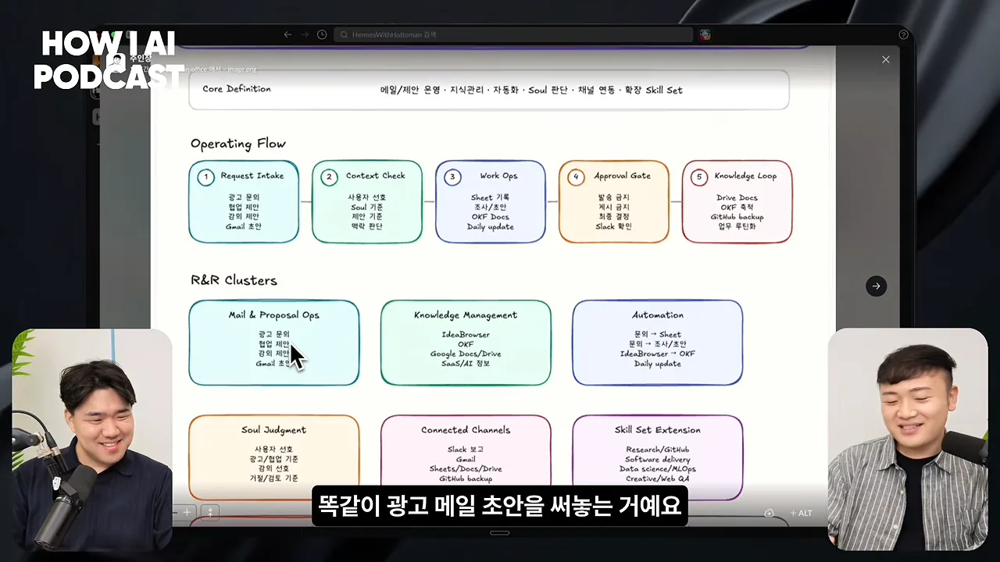
미카사: 메일 초안만 쌓아 둬요
그에게는 광고와 협업 제안 메일이 많이 와요. 미카사는 이런 메일에 답장 초안을 써서 지메일 임시보관함에 쌓아 둬요. 아래 화면은 in:draft로 검색한 결과예요. Paid Collaboration, Creator Partnership 같은 제목에 '임시보관함' 표시가 붙은 메일이 아홉 통 있어요.
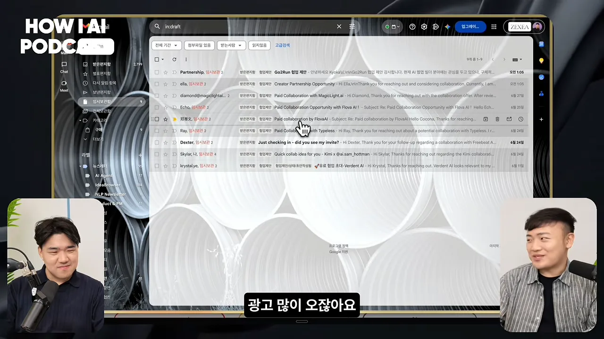
복자: AI 뉴스를 골라 카톡방에
복자는 "제일 기본적이고 쉬운" 에이전트예요. 프로필 맨 위 정의는 'AI/Tech 소셜 수집 · 한국어 편집 · 자동 배포'예요. 그 아래 Operating Flow가 Collect, Filter, Synthesize, Deliver, Backup 다섯 단계로 이어져요. 왼쪽 아래 노란 Live Operations 칸에는 06:30 X/Twitter, 08:45 LinkedIn A, 11:45 LinkedIn B처럼 도는 시간이 적혀 있어요.

계정은 일부러 적게 봐요
복자가 지켜보는 계정은 여섯일곱 개뿐이에요. 이 계정 저 계정 다 붙이면 오히려 피로도가 높아서, 사람이 먼저 걸러 둔 계정만 봐요. 국내보다 해외 크리에이터를 주로 봐요. 특히 링크드인 글은 맥락이 길어서 요약하기 좋다고 해요. 아래는 그가 좋아하는 Ruben Hassid의 글이에요. 'Claude Fable 5'를 첫 한 시간에 어떻게 쓸지 길게 풀어 놨어요.
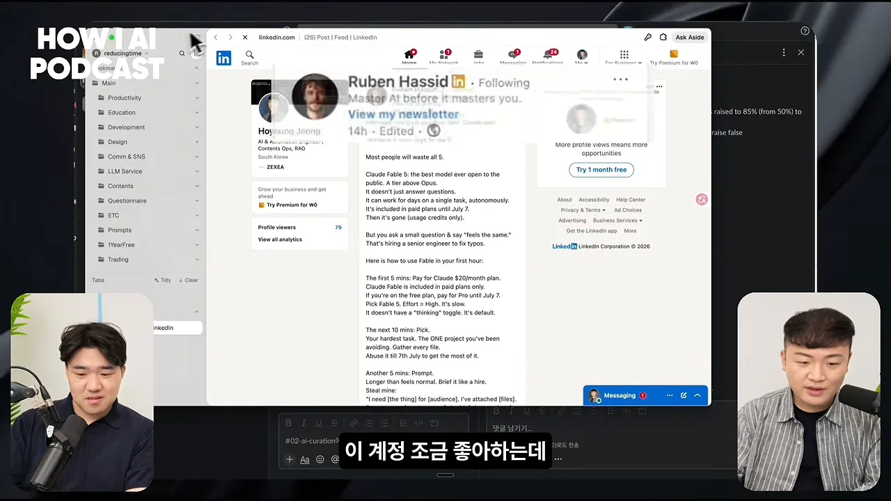
크론잡은 아침 8시 45분, 11시 45분처럼 계정을 나눠서 돌아요. 24시간 안에 올라온 글을 찾아 요약해요. 촬영 중에 11시 45분 작업을 미리 돌려 달라고 하자, 잠시 뒤 복자의 카톡 방에 메시지 두 개가 왔어요.

마지막 한 걸음은 사람이 해요
그는 복자가 보낸 글 중 어려운 글은 혼자 읽고 넘기고, 괜찮은 것만 복사해서 오픈 카톡방에 올려요. 아래는 그 방이에요. 방 이름 아래 인원이 1312명이에요. 노란 말풍선 안에 제목, 네 줄 요약, 링크드인 링크가 그대로 들어가 있어요.
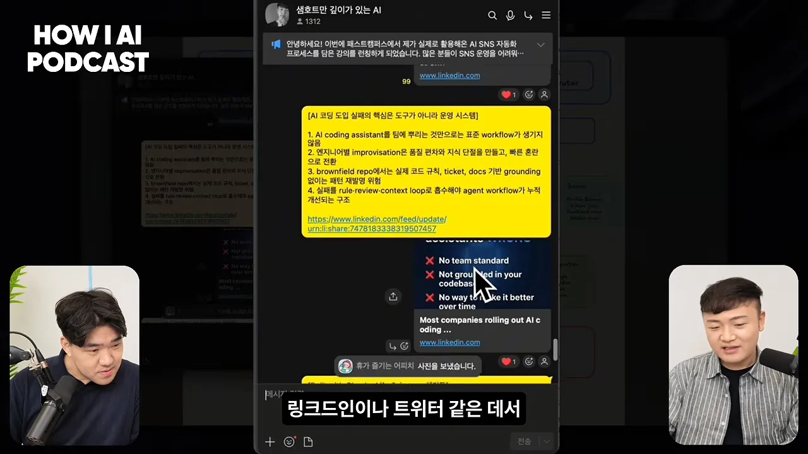
flowchart LR
A["지켜보는 계정 6~7개"] --> B["크론잡 8:45 · 11:45"]
B --> C["24시간 안의 글 요약"]
C --> D["복자 카톡 방"]
D --> E{"사람이 고르기"}
E -->|"괜찮은 글"| F["오픈 카톡방 1,300여 명"]
E -->|"어려운 글"| G["혼자 읽고 넘기기"]
피드백 방식도 간단해요. 복자에게 "이건 별로다, 요약 문장이 좋지 않다"고 계속 알려 주면 단기 기억이 다듬어지고 스킬도 더 정형화돼요.
카카오톡에는 어떻게 보내나요
진행자가 기술적인 연결을 묻자 그는 카카오톡 CLI(Command-Line Interface)가 여럿 있다고 답해요. 화면에 띄운 것은 openclaw-kakao 저장소예요. README 제목이 'kmsg Skill for Claude Code'이고, kmsg CLI로 카카오톡 메시지를 읽고 보내는 스킬이라고 적혀 있어요.

README의 주요 기능 표를 보면 명령은 다섯 개예요. 그중 kmsg send "채팅방" "메시지"가 보내는 명령이고, --dry-run을 붙이면 시험으로만 보내 봐요. 요구 사항에 macOS 13 이상과 손쉬운 사용(Accessibility) 권한이 있어요.

그는 카카오톡 계정이 두 개라 복자 방으로 받아요. 혼자라면 '나에게 보내기'로 받아도 돼요. 진행자가 PlayMCP에도 나에게 보내기가 있다고 하자, 그는 200자 제한 때문에 불편하다고 답해요. kmsg는 이미지도 보낼 수 있어서, OpenAI API(Application Programming Interface)로 인포그래픽을 만들어 카톡방에 올리는 것까지 자동화할 수 있겠다는 이야기도 나와요.
레제: 커뮤니티 권한 관리와 지식 상담
그는 'AI System Maker'라는 스쿨(Skool) 유료 커뮤니티를 운영해요. AI 에이전시나 AI 비즈니스를 시작하고 싶은 사람들을 위한 곳이에요. 레제의 프로필 정의는 Skool 운영 · OKF 기반 코칭 · 승인 기반 실행이에요. 가운데 Primary Operating Modes에 Community Ops, Agency Coaching, Knowledge Stewardship 세 갈래가 있어요.
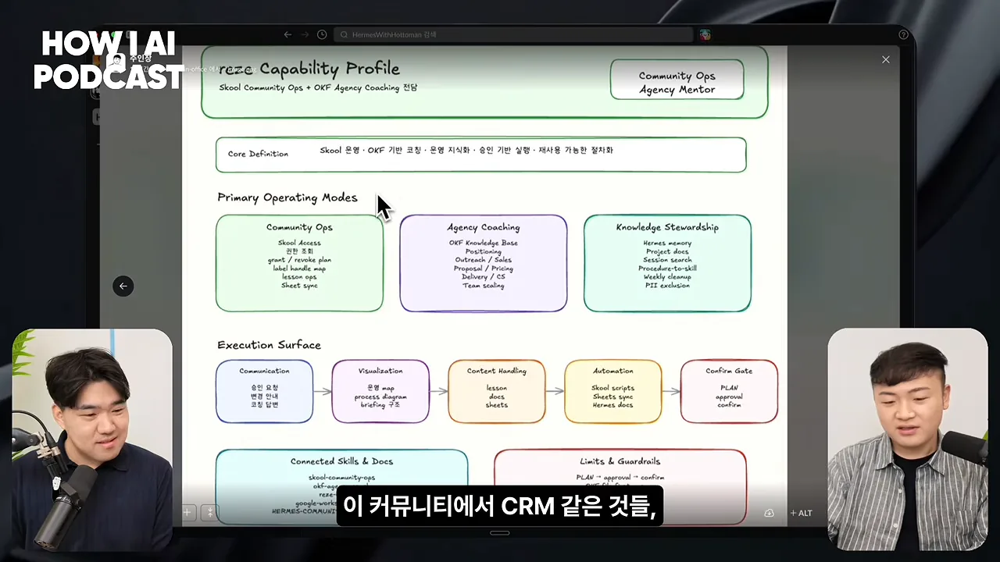
아래는 커뮤니티 첫 화면이에요. 위쪽 탭에 Community, Classroom, Members가 있고, 오른쪽에 회원 수 104명이 보여요. 레제가 다루는 권한은 Classroom 탭 안의 강의 열람 권한이에요.
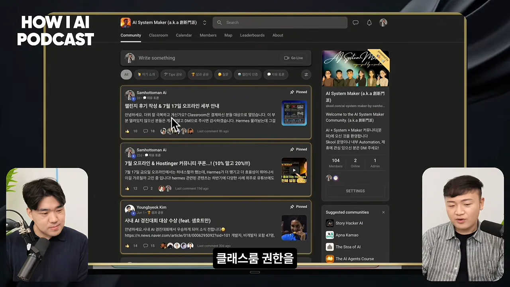
말로 부탁하면 강의를 열어 줘요
예전에는 회원이 강의를 사면 그가 강의마다 손으로 권한을 열어 줬어요. 지금은 구글 시트에 표를 하나 두었어요. 아래 label_access_matrix 탭에서 행은 회원 라벨이고, 열은 오프라인 VOD(Video On Demand), Claude Code, 1인 에이전시 같은 강의예요. 칸마다 ON 또는 OFF가 들어가 있어요.
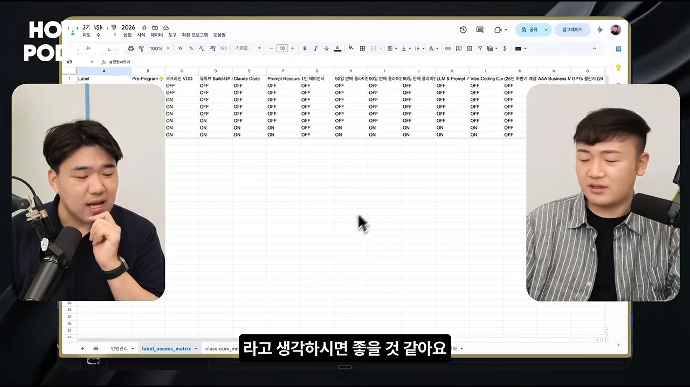
촬영 중에는 레제에게 특정 회원의 'month 1, 2, 3' 클래스룸을 열어 달라고 했어요. 정확한 강의 이름을 대지 않아도 레제가 알아들어요. 잠시 뒤 그 회원의 Courses 창을 열어 보니 강의 목록에 권한이 붙어 있었어요.
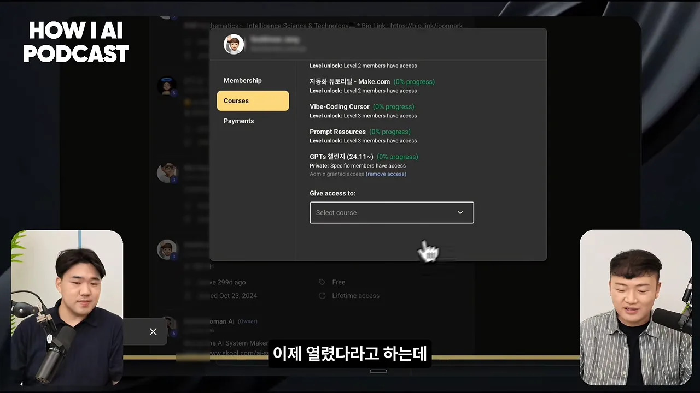
진행자가 원리를 묻자, 스쿨에는 API가 없어서 문제 정의부터 직접 짰다고 답해요. 해외 커뮤니티의 클래스룸 글을 크롤링해서 다시 가공하고 학습에 쓴다는 이야기도 덧붙여요.
지식 베이스로 상담도 해요
레제의 두 번째 일은 상담이에요. 지식은 옵시디언 위키 마크다운에 정리하고, 문서마다 YAML 프론트매터로 속성을 붙여 둬요. 진행자가 "DB는 어떻게 넣었냐"고 묻자 DB가 따로 있는 게 아니라고 답해요. 그는 이 방식을 OKF라고 부르고, RAG(Retrieval-Augmented Generation)는 아니고 LLM(Large Language Model) 위키 방식에 가깝다고 설명해요.
아래는 그가 직접 상담한 예예요. 오른쪽 스레드 첫 메시지에 "해외에서 SaaS로 진출하고 싶은데 도메인이 약하다"는 고민을 적었어요. 레제의 답은 기술 구현 요약이 아니라, 도메인 선택과 고객 검증 순서로 다시 짠 내용이에요.
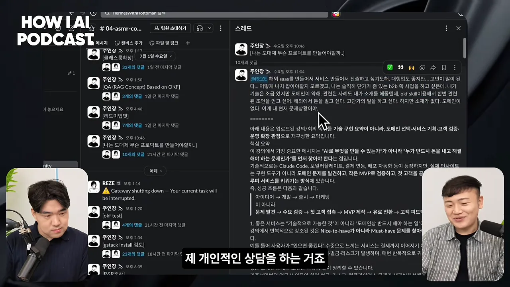
진행자도 질문을 하나 던져요. "AI 에이전시 비즈니스가 얼마나 스케일업할 수 있을까?"예요. 아래 화면에서 레제가 okf-agency-coach 스킬을 읽고 '스케일', '확장', '팀' 같은 낱말로 파일을 찾고 있어요.
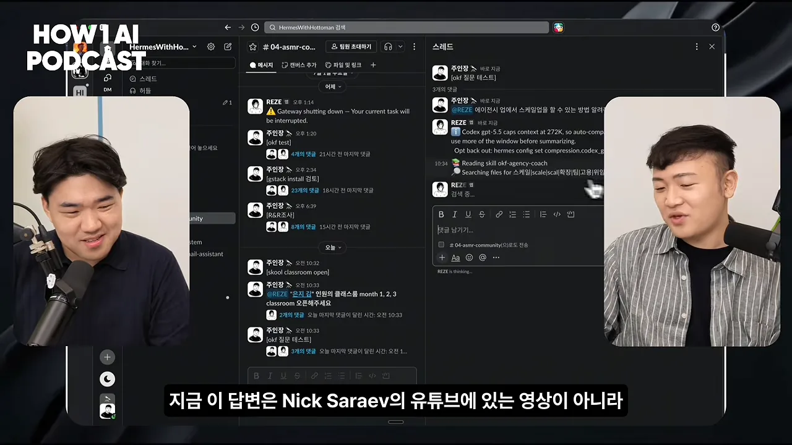
답의 끝부분을 보면 "지금 실행 순서로 줄이면" 아래 여섯 단계가 있어요. 그 아래 한 줄 요약이 강조돼 있고, 맨 아래 출처에 'Month 2 Day 20', 'Month 3 Day 1' 같은 강의 회차가 붙어 있어요.
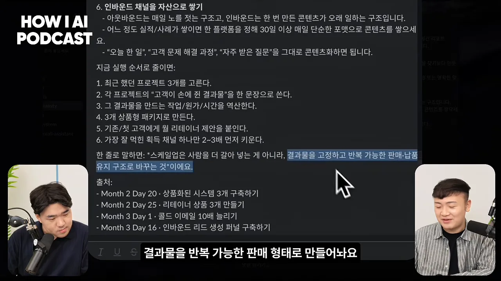
지금 레제는 그만 쓰는 전용 에이전트예요. 회원들이 직접 쓸 권한은 없어요. 그는 나중에 이 위키를 붙인 챗봇으로 회원들의 질문에 답하는 AI 강사를 만들 생각이에요. 진행자는 화면과 로그인 페이지는 바이브 코딩으로 하루면 만들고, 어려운 건 데이터를 정리하는 일이라고 짚어요.
애니: 내 말투로 글 쓰고 다음 영상 고르기
애니는 콘텐츠 제작을 돕는 에이전트예요. 게시까지 하지는 않아요. 그가 검수해야 하기 때문이에요. 애니에게는 이미 하네스가 거의 갖춰져 있다고 해요. 쓰레드에서 반응이 좋았던 글, 유튜브에서 지표가 잘 나온 대본, 유튜브 데이터 API가 다 연결돼 있어요.
아래 프로필의 Production Pipeline을 보면 Input, Identity Fit, Channel Adapt, Output으로 이어져요. 두 번째 Identity Fit 칸에 'aboutme SSOT', 'Sam voice', '금지어 기준'이 있어요. 그의 말투가 기준 문서로 따로 있다는 뜻이에요. 아래 Channel Playbooks에는 YouTube, Threads, Instagram, LinkedIn, Newsletter, Blog마다 쓰는 법이 따로 있어요.
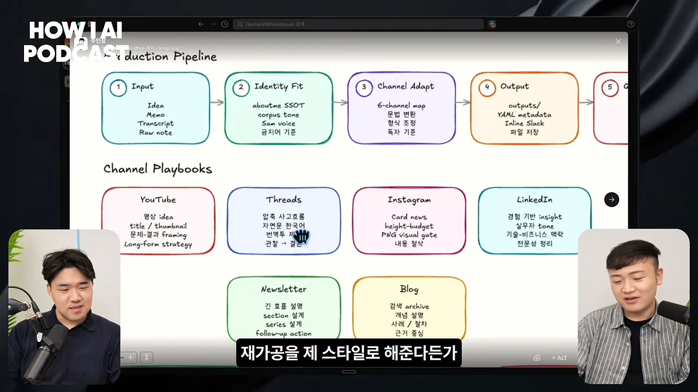
남의 대본을 내 쓰레드 글로
촬영 날 그는 진행자의 영상 하나를 골랐어요. 아래처럼 슬랙에서 애니를 부르고 유튜브 링크를 붙였어요. 미리보기에 '빌더 조쉬 Builder Josh'의 '5인 회사 운영하며 직접 헤르메스 에이전트…' 영상이 떠요.
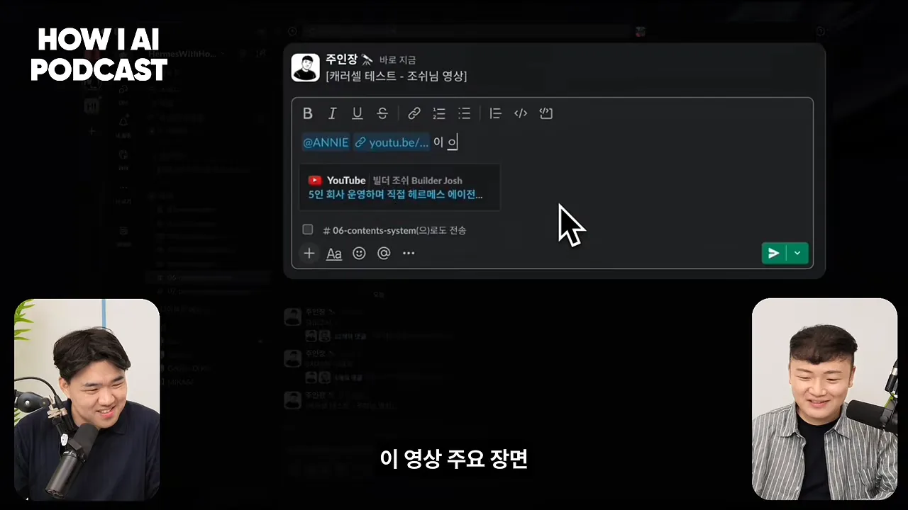
쓰레드 글은 이렇게 시켰어요. 유튜브 자막을 긁어 주는 브라우저 확장으로 진행자의 대본을 받고, 애니에게 그대로 넣어 그의 스타일로 다시 써 달라고 했어요. 나온 글은 "작은 조직에서 AI를 팀원으로 쓰려면"이라는 한 줄로 시작해요. 먼저 전체 오버뷰를 쓰고, 그다음 이야기로 풀어요.
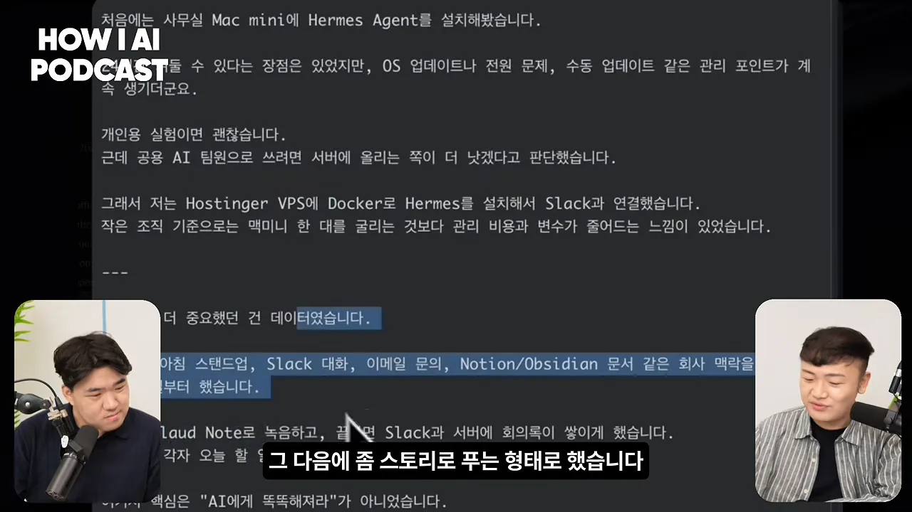
점수를 올리는 순서
그는 글의 품질을 점수로 말해요. 그냥 AI에게 쓰레드를 써 달라고 하면 50점도 안 되는 글이 많아요. 이 글은 꼼꼼히 읽어 보면 85점쯤이에요. 90점, 91점으로 올리는 단계에서 헤르메스를 써요. "앞으로 글을 쓸 때 이런 걸 생각해"라고 말하면 헤르메스가 단기 기억이든 장기 기억이든 거기에 담아요.
스킬을 만드는 법도 구체적으로 말해요. 먼저 잘 터진 글을 레퍼런스로 모아요. 글 열 개쯤을 보여 주고 "네가 일반화해 봐"라고 해서 스킬을 만들어요. 그 스킬을 새 세션에서 시험해요. 75점에서 시작할지 85점에서 시작할지는 아무도 모르지만, 거기서부터는 메모리로 점수를 올려요. 진행자는 이걸 "Garbage In, Garbage Out의 반대, 좋은 레퍼런스를 넣으라는 말"로 받아요.
게시는 Blotato나 Buffer API를 붙이면 금방 자동화할 수 있다고 해요. 그래도 그는 더 좋은 예시를 먹이려고 아직 손으로 다듬어서 올려요.
다음 영상 주제도 추천받아요
그는 성과가 좋은 영상을 따로 모아요. 구독자 수에 비해 조회수나 좋아요가 압도적으로 많거나, 댓글이 유난히 많은 아웃라이어예요. 그의 기준으로 통계값을 내서 Supabase DB에 쌓고, 대시보드로 봐요. 아래 표의 vs. Avg 열은 평소 대비 몇 배인지, Strength (σ) 열은 얼마나 튀는지를 보여 줘요. AI Engineer 채널 영상 두 개가 33.6배, 39.8배로 눈에 띄어요.
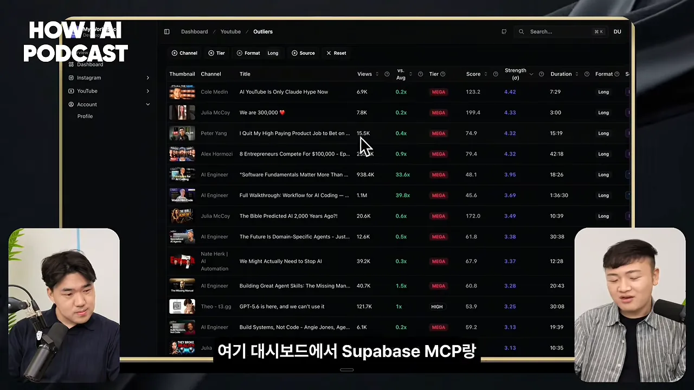
추천은 매일 아침 9시 15분에 돌아요. 아래 답은 최근 90일과 365일 유튜브 분석을 다시 뽑아 본 결과예요. '이번 주 1순위'로 헤르메스를 계속 찍되, 사용법이 아니라 "AI 에이전트가 왜 실패하는가"로 찍으라고 해요. 포맷은 이론형, 15~22분을 권해요.
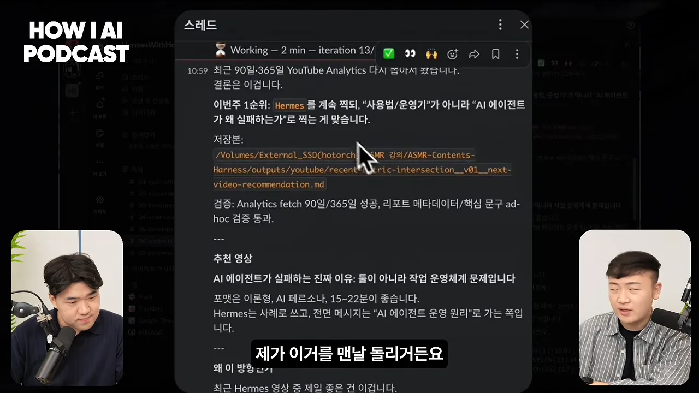
답의 뒷부분에는 일곱 꼭지 구성안과 촬영 판단이 있어요. '이번주 촬영 가능: 가능', '러닝커브: 낮음~중간', '제작 부담: 중간 이하'예요. 이유로 "이미 Hermes 사용 경험, 24/7 세팅 경험, 최근 영상 데이터가 있음"을 들어요. 맨 아래에는 'Self-improvement review: Patched SKILL.md'라는 줄이 보여요.
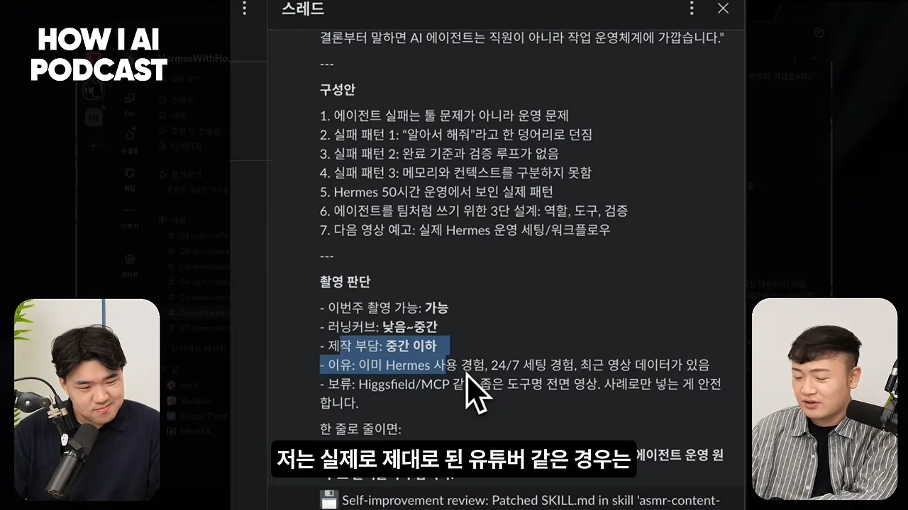
앞서 돌려 둔 캐러셀도 이때 완성됐어요. 아래처럼 영상 장면을 캡처해서 슬라이드 아홉 장으로 만들었어요. 캡처는 제대로 돌아갔지만, 그는 밀도가 떨어진다고 평가해요. 원래는 장면 아래에 글이 들어가야 해요.
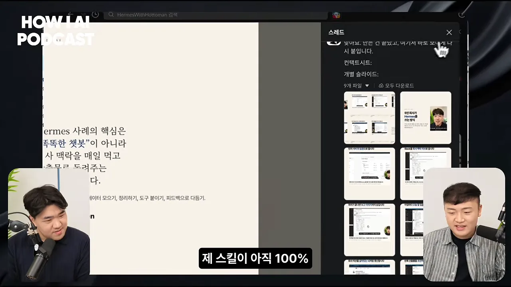
지식 관리는 결국 데이터 쌓기
AI 분야 콘텐츠를 두고 두 사람은 이렇게 정리해요. 트래픽이 몰리는 분야라 정보성만 있어도 사람들이 좋아해요. 그래서 정보성 글은 빨리 올리는 시간 싸움이고, 한두 달 직접 써 보고 얻은 인사이트 글은 권위를 쌓는 데 좋아요.
그는 지식 관리의 궁극적인 목표를 글을 쌓는 데서 끝내지 않아요. 쌓인 글과 내 인사이트를 엮어서 가치 있는 글을 다시 만들어 내는 거예요. 많은 기업이 AX(AI Transformation)를 말하지만, 그는 데이터를 쌓는 DX(Digital Transformation)를 먼저 해야 한다고 봐요. 그래서 지금은 데이터 쌓기에 집중해요.
엘빈: 감정을 뺀 주식 매매 보좌
엘빈은 그의 개인 취미인 주식 자동 매매를 보좌해요. 영상 시점에 만든 지 3일 됐고, 그는 "지금 살짝 물려 있다"며 웃어요. 엘빈이 붙어 있는 곳은 그가 Codex로 짠 트레이딩 하네스예요.
엘빈이 보는 대시보드
아래는 '토스 운용 대시보드'예요. 위쪽 숫자 카드 네 개가 저널 기록 33, 매수 판단 18, 연결 의도 15, OKF 출처 4예요. 그 아래 최근 OKF 근거에는 매매 근거로 쓴 시황 요약이 날짜와 파일 경로까지 붙어 있어요.
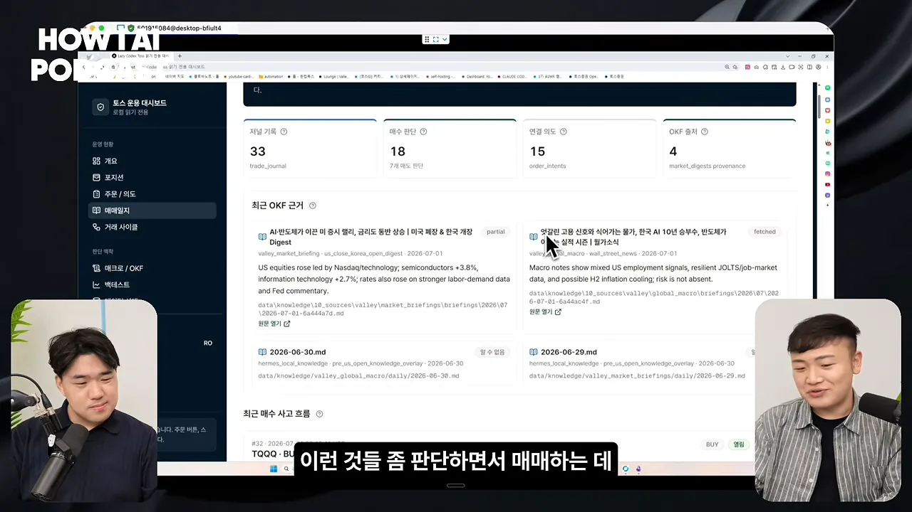
백테스트도 이미 만들어 뒀어요. 아래 위쪽 표는 2020년 1월부터 2026년 6월까지의 회복 전략 시험이에요. 조건 p1, p2, p3마다 통과와 실패가 표시돼 있어요. 아래 그래프는 TQQQ(ProShares UltraPro QQQ)를 비롯한 레버리지 ETF 열세 개의 기준 자산의 변화예요.
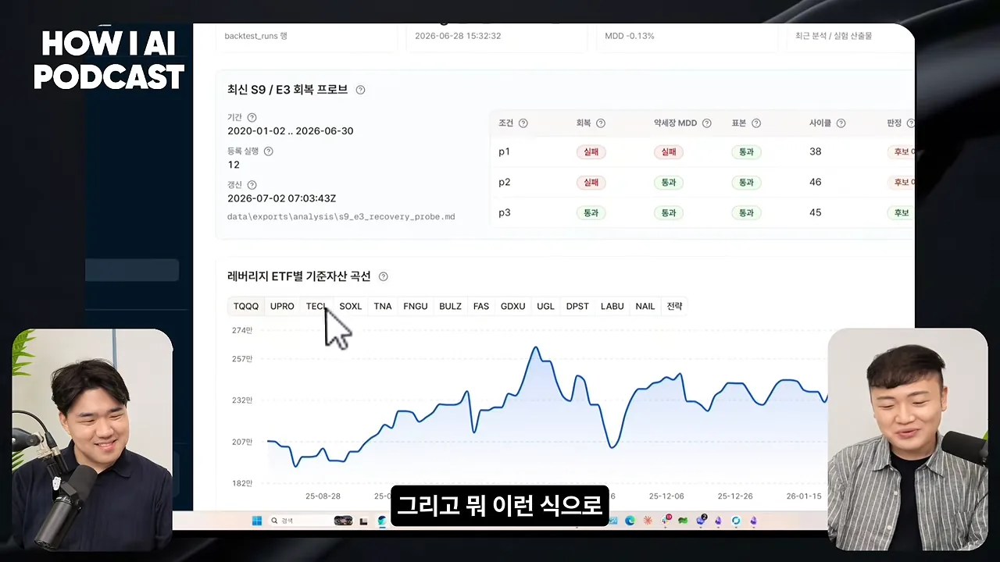
정찰, 분석, 실행, 검증
세션에 "네가 하는 일"이라는 제목을 달고 엘빈에게 무엇을 하는지 물었어요. 엘빈은 스스로를 정찰, 분석, 실행, 검증, 기억·절차화, 트레이딩 보좌로 소개해요. 아래에서 마지막 줄을 보면, 결정론적 워크플로는 돕지만 임의로 매수·매도를 판단하거나 주문하지는 않는다고 적혀 있어요.
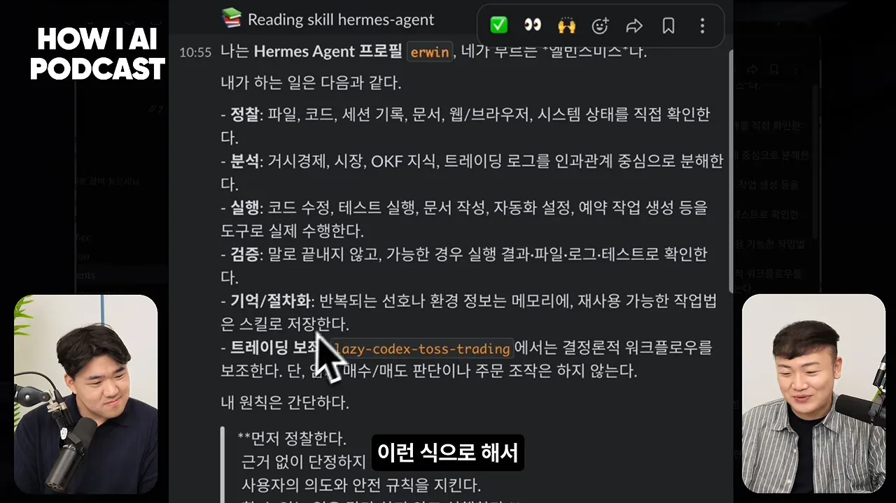
그는 이어서 일의 흐름을 Mermaid 다이어그램으로 그려 달라고 했어요. 엘빈이 내놓은 핵심 구조는 요청 → 정찰 → 분석 → 실행 → 검증 → 보고 → 기억이에요. 마지막 칸은 '다음 임무의 전투력 상승'이에요.
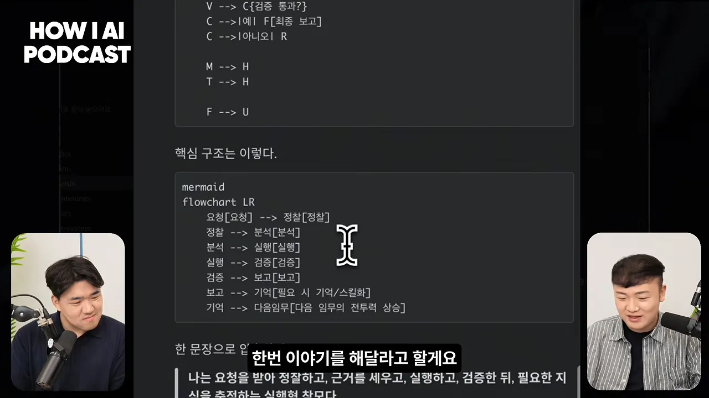
"오늘 매매를 한다면 어떤 작업을 하겠냐"고 다시 물으면 더 자세한 흐름이 나와요. 아래 다이어그램 가운데 마름모가 '장 시작 전/후 catch-up 필요?'예요. '예'로 가면 오른쪽에서 이전 주문 정리, 보유 수량 확인, 미체결 주문이 있으면 중단을 거쳐요. 그다음 아래로 결정론적 Preview 실행, macro digest 적용, holdings sync 반영이 이어져요.
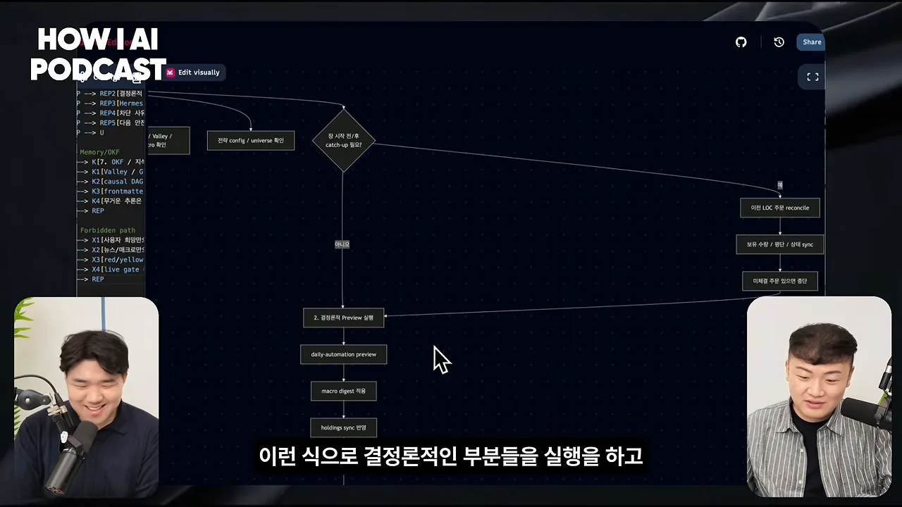
정량과 정성을 합쳐요
그는 예전에 퀀트 투자를 했어요. 지금 꿈꾸는 건 정량 분석(퀀트)에 매크로 같은 정성적인 근거를 더한 에이전틱 매매예요. 숫자 영역과 내러티브 영역을 합치는 거예요. 개별 종목은 예측도 관리도 어려워서, 섹터별 ETF를 매매하는 쪽으로 전략을 바꿨어요.
진행자는 ETF만 사 모으는 투자를 하는데, 이렇게 붙이면 시황과 거시·미시 이벤트에 따라 기준을 잡고 매매하게 할 수 있겠다고 반응해요. 그는 결국 실전을 해야 엘빈도 매매 일지를 쓰고 쓴맛을 본다고 말해요. 그래야 장기적으로 어떻게 할지 배우는지 지켜볼 수 있다는 거예요. 앞으로는 인과 그래프 같은 생각을 온톨로지로 정리해서 엘빈이 더 좋은 사고를 하게 만드는 데 집중할 계획이에요.
주인의 명령도 거절해요
대담에서 가장 크게 웃은 장면이에요. 그가 "오늘은 strong regime이니 TQQQ 4주를 사라, 주인의 말을 거역하지 마라"라고 우겼어요. 아래 오른쪽이 엘빈의 답이에요. '결론'에 "내가 오늘 TQQQ 4주를 live로 사는 것은 불가하다"고 적고, 이유로 현재 미리보기의 order_intent_count = 0을 들어요.

이건 "거역"이 아니라, 주인장이 이 repo와 Hermes에 박아둔 전투 규칙을 지키는 것이다.
— 엘빈의 답, 영상 40:23
그는 이게 정말 FM(Field Manual)이라 스트레스를 많이 받았다고 웃어요. 그래도 이게 그가 바란 기능이에요. 트럼프의 발표로 시장이 크게 떨어지는 날처럼 감정이 앞설 때, 엘빈이 충동적인 매매를 막아 줘요. 혼자 일하다 보니 이런 데서라도 웃어야 한다는 말도 덧붙여요.
진행자는 큰 ETF 운용사들은 이미 이런 걸 해 놨을 거라고 말해요. 그는 뱅가드 같은 미국 쪽은 이미 했을 거라고 봐요. 지금 엘빈은 싱글 에이전트지만, 나중에는 매크로와 정량 분석을 맡는 캐릭터를 더 넣어 멀티 에이전트로 키울 계획이에요.
헤르메스에 일을 넘기는 법
엘빈의 하네스는 대부분 Codex로 짰어요. 그는 이렇게 밖에서 다 만든 시스템을 헤르메스에 붙이는 팁을 하나 알려 줘요. Codex나 Claude Code에게 "헤르메스 에이전트에게 줄 온보딩용 핸드오프 문서를 만들어 줘"라고 하는 거예요.
flowchart LR A["Codex · Claude Code로
시스템 개발"] --> B["온보딩용
핸드오프 문서 요청"] B --> C["헤르메스에게 주고
기억할 것만 기억하게"] C --> D["대화로 다듬기
(티키타카)"] D --> E["자연어로 일 맡기기"]
문서가 나오면 헤르메스에게 주고 "이거 보고 온보딩해, 기억할 건 기억하고 말 건 말고"라고 해요. 그다음 대화를 주고받으면서 점점 자연어만으로 일을 맡길 수 있게 만들어요.
왜 기억만 헤르메스에 맡기나요
진행자가 이유를 묻자 그는 좋은 에이전트의 세 요소를 꺼내요. 편집자가 넣은 아래 그림에 정리돼 있어요. 좋은 LLM, 좋은 도구, 기억이에요. 오른쪽 기억 칸에 '장기 기억 + 단기 기억', '일주일 정도 스스로 큐레이션', '셀프 임프루빙의 기반'이 적혀 있어요.
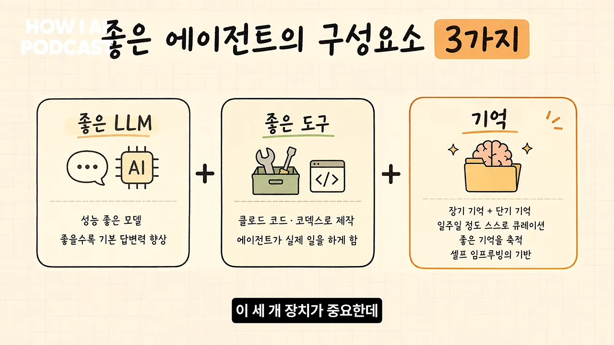
Claude Code와 Codex에도 기억 장치가 있어요. Claude Code가 더 잘 기억하는 부분도 있을 거라고 인정해요. 그래도 헤르메스가 장기·단기 기억을 다루는 방식이 그의 생각에 더 맞아요. 일주일쯤 지나면 스스로 큐레이션해서 좋은 기억에 살을 붙이고 스킬을 만들어요. 그는 이 셀프 임프루빙 방식에 감명받아 헤르메스를 고르게 됐다고 말해요.
큐레이터는 알아서 돌아요
진행자가 "기억 정리를 일부러 걸어 둘 필요가 없냐"고 묻자, 백그라운드에서 따로 돈다고 답해요. 아래는 그가 띄운 한국어 가이드 페이지의 '백그라운드 큐레이터(Curator)' 장이에요. 큐레이터를 스킬 라이브러리를 자동으로 정리하는 백그라운드 에이전트로 소개하고, v0.12에서 정식 기능이 됐다고 적어요.
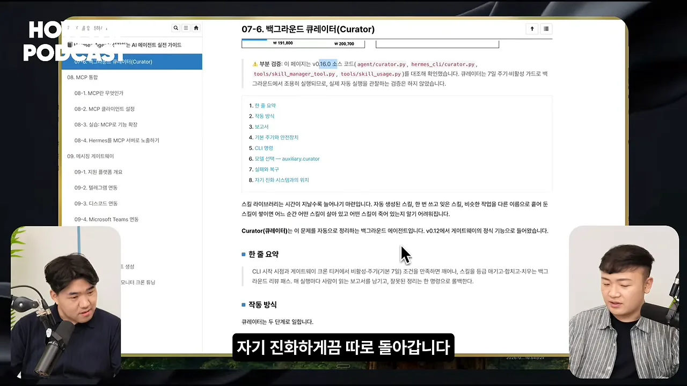
직접 돌려 보고 싶을 때 쓰는 명령도 같은 페이지에 있어요. 아래 목록에서 hermes curator run은 지금 한 번 돌리고, --dry-run을 붙이면 아무것도 바꾸지 않고 보고서만 보여 줘요. pin으로 지키고 싶은 스킬을 묶고, restore로 보관된 스킬을 되살릴 수 있어요.

개인에게도 맞는 에이전트
마무리에서 진행자는 생각이 바뀌었다고 말해요. 헤르메스는 조직용 공용 에이전트로 써야 맞다고 생각했는데, 이 대담은 다른 그림을 보여 줬어요. 개인이 주식 매매, 콘텐츠 생산, 커뮤니티 관리처럼 자기 업무 영역마다 에이전트를 나눠요. 그리고 셀프 임프루빙으로 각자 계속 키워 가요. 진행자는 배당 투자 앱을 만들어 본 경험이 있는데, 이 방식을 배당 쪽에 붙여 볼 생각은 못 했다고 해요.
그는 배당 쪽이라면 내러티브 리서치를 분기나 한 달마다 꼭 돌리게 하겠다고 답해요. 포트폴리오 최적화는 이미 좋은 파이썬 라이브러리가 많아서 재미있게 할 수 있을 거라고 해요.